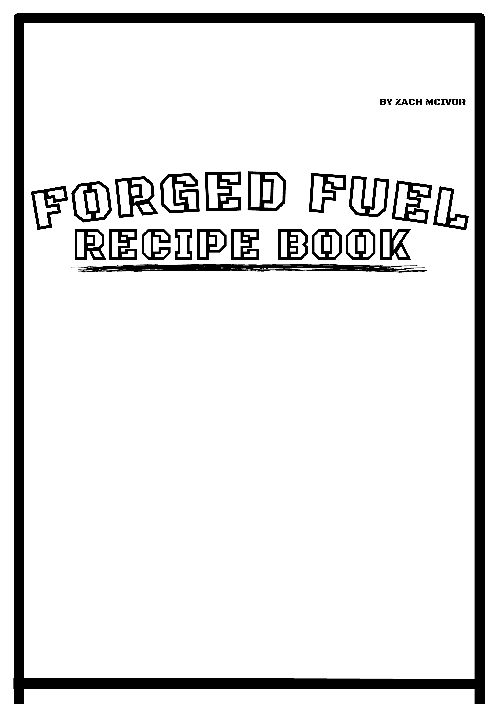
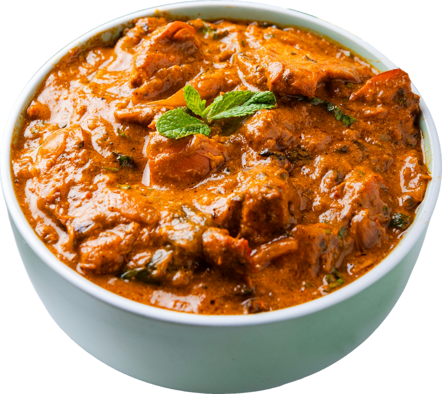
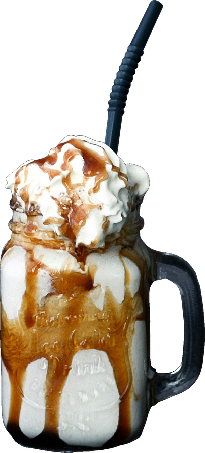
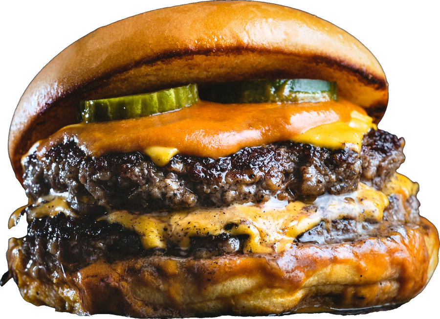
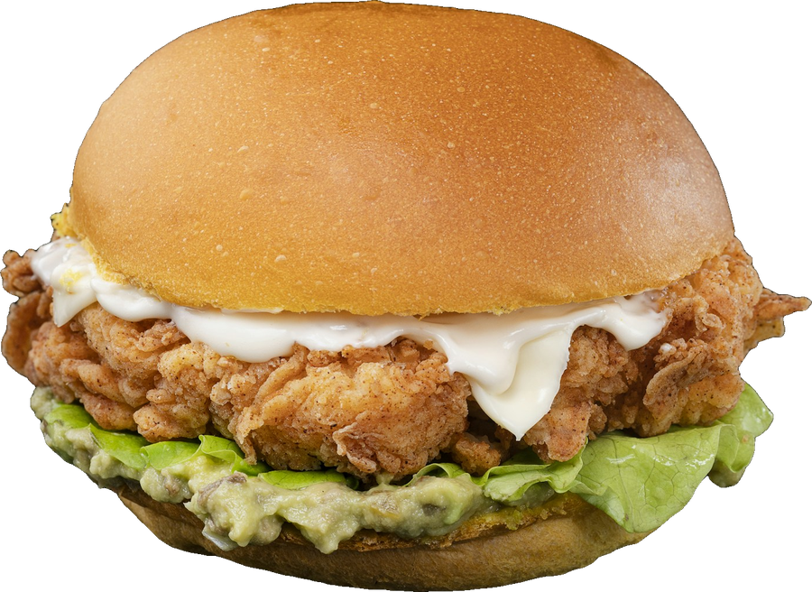
1. Flatten & marinate: Pound each fillet between baking paper to an even 1.5 cm thick so it cooks before it dries out. Mix the yoghurt, milk, lemon juice, half the paprika and a pinch of salt, coat the chicken and refrigerate for 30 minutes (or overnight).
2. Crumb: Mix the crushed cornflakes, panko and remaining spices. Lift the chicken from the marinade, let the excess drip off, then press firmly into the crumb on both sides.
3. Cook: Spray all over with oil. Air fry at 190°C for 14–16 minutes, turning halfway, until golden and cooked through (74°C in the centre). Oven: 200°C fan-forced on a rack over a tray, 20–22 minutes. Rest 3 minutes on the rack.
4. Build: Stir the mayo, yoghurt and garlic together. Toast the buns cut-side down in a dry pan, then layer sauce, lettuce, chicken and a final spoon of sauce.
Takeaway secret: Every patch of crumb you miss with the oil spray stays pale, so coat it properly. Resting on a rack, not a plate, keeps the base crunchy.
1. Sauce first: Stir all the special sauce ingredients together and chill while you cook – it tastes better after 10 minutes.
2. Roll, don't knead: Shape the mince into 4 loose balls and keep them cold. Overworking makes the patties tight and dry.
3. Smash: Heat a heavy frying pan over high heat for 3 minutes, then spray lightly with oil. Add 2 balls and immediately smash each to 1 cm thick with a sturdy spatula (baking paper on top stops sticking). Season and cook untouched for 2 minutes until deeply browned.
4. Flip & stack: Scrape under the crust, flip, top each patty with a cheese slice and cook 45–60 seconds. Repeat with the remaining balls.
5. Build: Toast the buns. Spread sauce on both halves, add pickles, then stack two cheesy patties per burger.
Takeaway secret: Smash once, in the first 30 seconds, and never press again. Lean mince gets its flavour from that crust, so the pan must be properly hot.
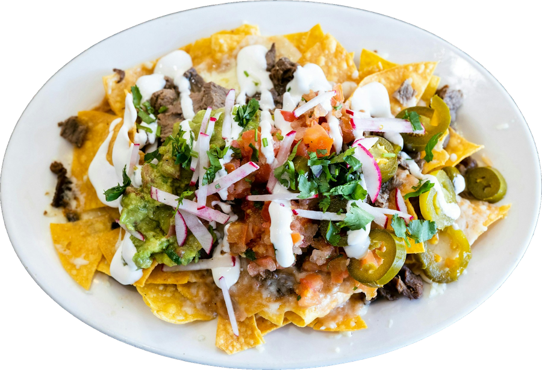
1. Bake the chips: Spread the wedges over two lined trays, spray with oil and salt lightly. Bake at 200°C fan-forced for 8–10 minutes until crisp and lightly golden.
2. Cook the beef: Brown the mince well in a hot non-stick pan – the browning is the flavour. Add onion and garlic for 2 minutes, then the spices for 30 seconds. Stir in tomato paste, beans and 60 ml water; simmer until thick, not wet.
3. Layer: On an ovenproof platter, layer half the chips, half the beef and half the cheese, then repeat. Bake 5 minutes until the cheese melts.
4. Load up: Loosen the yoghurt with lime and drizzle over, then add the avocado, tomato salsa, jalapeños, radish and coriander. Serve straight away.
Takeaway secret: Two thin layers beat one big pile – every chip gets beef and cheese, not just the top ones. Keep the beef thick so the chips stay crunchy.
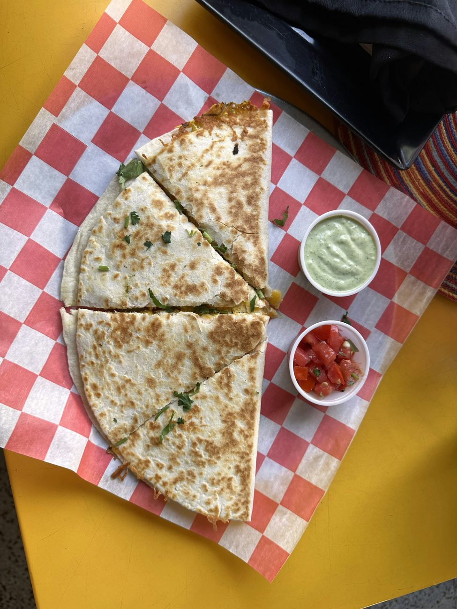
1. Cook the chicken: Toss the chicken with the chipotle, spices and a little salt. Cook in a hot pan sprayed with oil for 6–7 minutes until golden and cooked through. Add capsicum and corn for the last 2 minutes, then stir through the spring onion and let it cool for a few minutes.
2. Make the crema: Blend or mash the yoghurt, avocado, lime and a pinch of salt until smooth and pale green.
3. Fill & fold: Over half of each wrap, scatter a little cheese, then the filling, then the rest of the cheese – cheese on both sides glues it together. Fold over and press flat.
4. Toast: Cook in a dry non-stick pan over medium heat for 2–3 minutes a side, pressing with a spatula, until golden and spotted. Rest 1 minute, cut each into 2 wedges and serve with crema and salsa.
Takeaway secret: Medium heat, not high. The wrap needs a few minutes for the cheese inside to melt before the outside scorches.
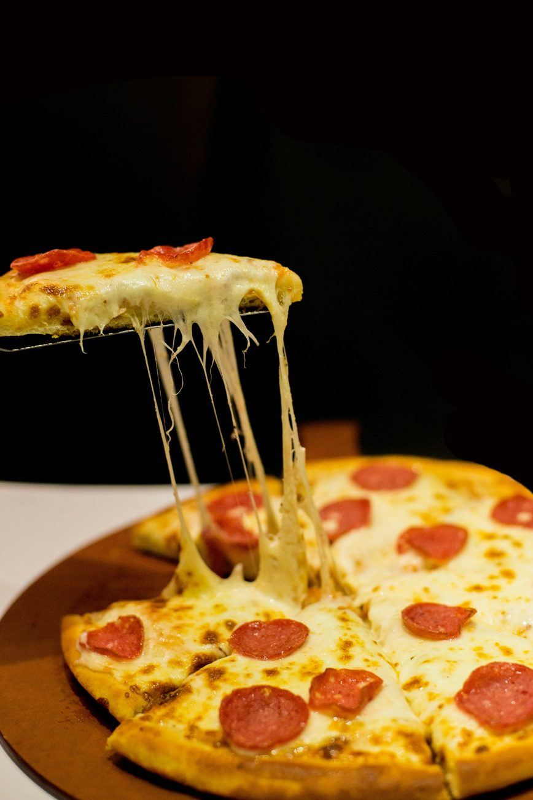
1. Heat the tray: Put a pizza tray or large baking tray in the oven and heat to 220°C fan-forced. A hot tray is what gives you a crisp base.
2. Make the dough: Stir the flour, yoghurt and salt into a shaggy dough, then knead on a floured bench for 1–2 minutes until smooth and only slightly tacky. Roll out to a 30 cm round on baking paper.
3. Par-bake: Slide the base (on its paper) onto the hot tray and bake 5 minutes, until set and lightly puffed.
4. Top & bake: Mix the passata, garlic and oregano and spread thinly, leaving a 2 cm border. Add mozzarella, pepperoni and parmesan. Bake another 10–12 minutes until the cheese is bubbling and the pepperoni edges curl and crisp.
5. Rest: Rest 2 minutes before slicing so the cheese sets. Finish with basil and chilli flakes.
Takeaway secret: Go easy on the sauce – a thin layer keeps the base crisp. Too much passata is the number one cause of a soggy homemade pizza.
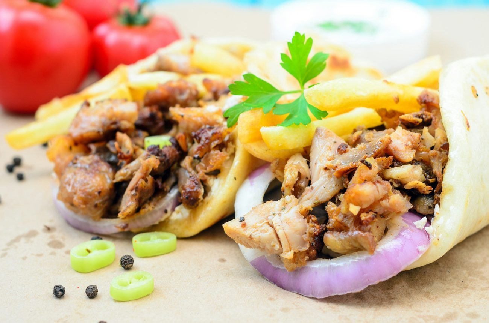
1. Make the doner: Knead the mince with the onion and spices for 2 minutes until sticky and paste-like. That gives doner its dense, sliceable texture. Press into a 15 x 8 cm loaf on a lined tray.
2. Bake: Bake at 180°C fan-forced for 25 minutes. Rest 5 minutes, then slice as thinly as you can.
3. Chips: Toss the potatoes with oil and salt. Air fry at 200°C for 18–20 minutes, shaking twice, until golden (oven: 220°C on a lined tray, 30 minutes).
4. Crisp the meat: Fry the doner slices in a very hot dry pan for 1–2 minutes until the edges char and crisp.
5. Wrap: Stir the yoghurt, garlic, lemon and a pinch of salt together. Warm the bread, spread with garlic sauce, then pile on meat, chips, onion, parsley and chilli. Roll tightly in baking paper.
Takeaway secret: Searing the thin slices just before serving is what makes it taste like it came off the spit, with crisp edges and a tender centre.
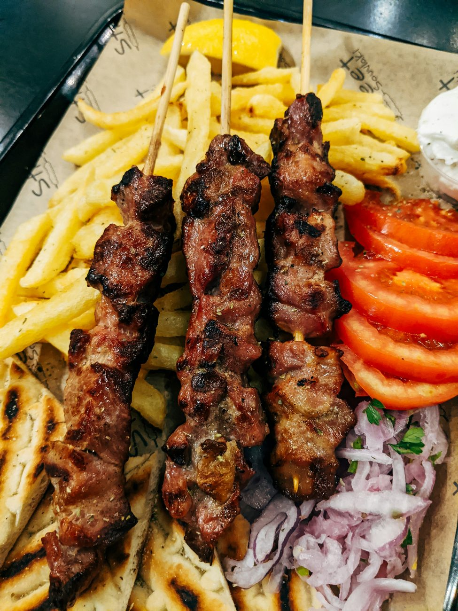
1. Marinate: Toss the pork with the oil, lemon, garlic, oregano, paprika, salt and pepper. Refrigerate 30 minutes to 4 hours. Soak 4 bamboo skewers in water.
2. Chips: Toss the potatoes with oil and salt and air fry at 200°C for 20 minutes, shaking twice (oven: 220°C, 30 minutes).
3. Tzatziki: Squeeze the cucumber hard in a clean tea towel so the tzatziki stays thick. Mix with the yoghurt, garlic, lemon, dill and salt.
4. Grill: Thread the pork onto the skewers. Cook on a very hot grill pan or BBQ for 8–10 minutes, turning every 2 minutes, until charred and just cooked through. Rest 3 minutes.
5. Plate up: Warm the pita on the grill, then serve with the chips, tomato, onion, tzatziki and lemon.
Takeaway secret: Cut every cube the same size and leave gaps on the skewer. Heat reaches every side, so the edges char before the centre dries out.
1. Marinate: Mix the chicken with the yoghurt, garlic, ginger, spices, salt and lemon. Marinate 20 minutes, or overnight for the best flavour.
2. Char the tikka: Air fry in a single layer at 220°C for 10–12 minutes, shaking once, until charred at the edges and cooked through (or under a hot grill, 12–15 minutes, turning once). Those dark spots are the tikka flavour.
3. Build the masala: Cook the onion and chilli in the butter and oil over medium-low heat for 8–10 minutes until golden. Add garlic and ginger for 1 minute, the spices for 30 seconds, then the tomatoes, paste and honey. Simmer 12–15 minutes, stirring often.
4. Finish: On low heat, stir in the evaporated milk – a hard boil can split it. Add the chicken and its juices and simmer 3–4 minutes.
5. Serve: Serve over the rice with fresh coriander and a squeeze of lemon.
Takeaway secret: Simmer the tomato until it's jammy and a little oil pools at the edges. By then the raw tang is gone and the spices taste toasted, not dusty.
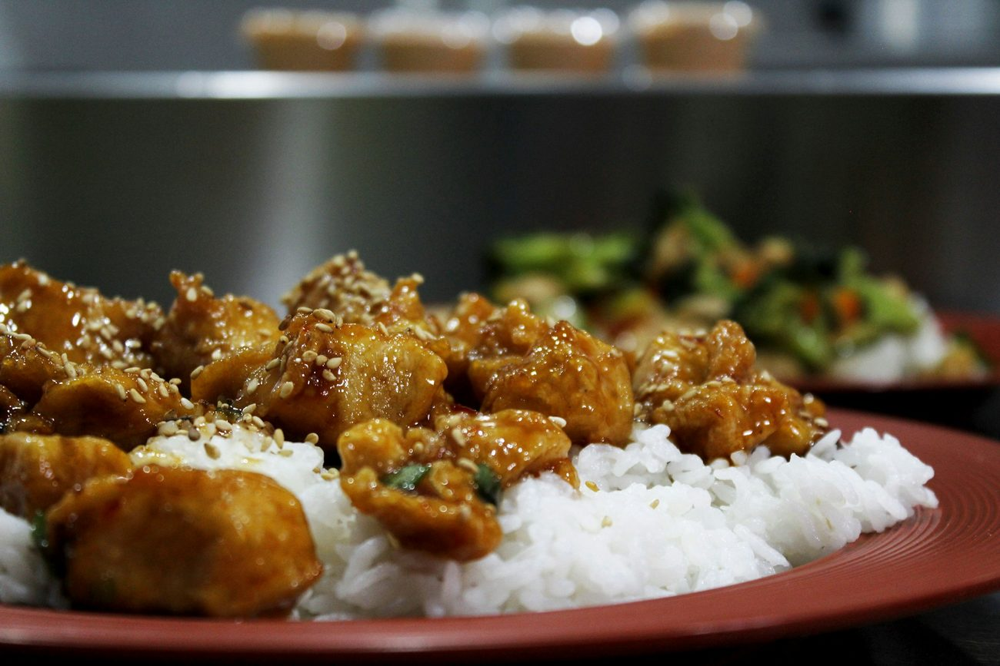
1. Coat: Toss the chicken with the egg white, cornflour and salt until every piece is coated. This thin coat keeps the chicken juicy and gives the sauce something to cling to.
2. Rice & greens: Get the rice on. Steam or microwave the greens for 2–3 minutes just before serving.
3. Fry: Heat the oil in a large non-stick pan over medium-high heat. Cook the chicken in a single layer, turning, for 6–8 minutes until golden all over and cooked through. Remove to a plate.
4. Glaze: Add the honey, soy, garlic, ginger, vinegar and water to the pan and bubble for 1 minute. Stir in the cornflour slurry and simmer until syrupy and glossy, about 1 minute. Return the chicken and toss to coat.
5. Serve: Spoon over rice with the greens, then scatter with sesame seeds and spring onion.
Takeaway secret: Take the sauce off the heat once it coats the back of a spoon. Honey keeps thickening as it cools, and if it goes too far it turns sticky and burns.
Serve with 60 g (dry) jasmine rice per person: add 210 cal, 4g P, 47g C, 0g F.
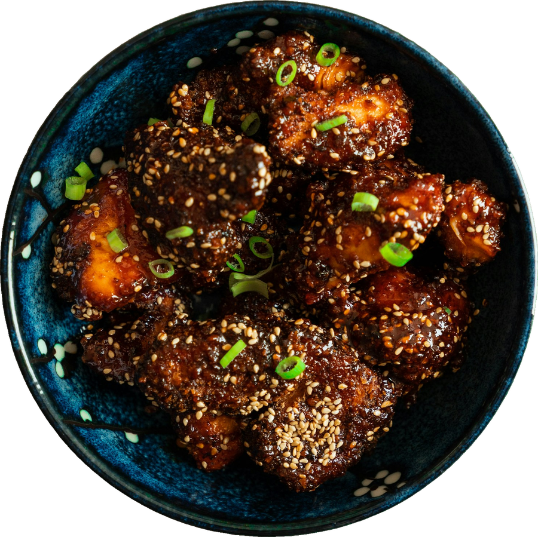
1. Coat: Toss the chicken with the egg white, then with the cornflour and seasonings until each piece is dry and dusty. Shake off the excess.
2. Air fry: Spray the basket and chicken well with oil. Air fry at 200°C for 12–14 minutes, shaking halfway, until crisp and cooked through (oven: 220°C fan-forced, 18–20 minutes, turning once).
3. Make the glaze: While the chicken cooks, simmer all the glaze ingredients in a large pan for 2–3 minutes until thick and glossy.
4. Toss: Take the pan off the heat, add the hot chicken and toss quickly until coated. Tip into a bowl and shower with sesame seeds and spring onion.
Takeaway secret: Glaze at the last second. Toss hot, crisp chicken in thick sauce off the heat and eat it straight away, while the coating still crunches through the glaze.
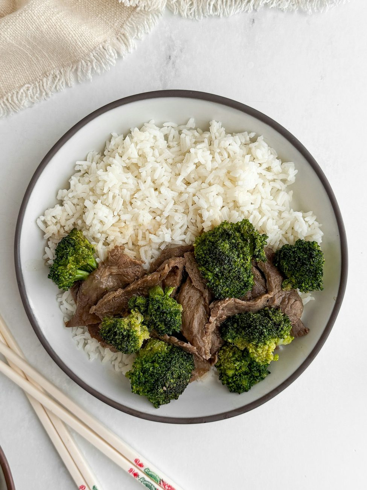
1. Slice thin: Freeze the steak for 20 minutes so it firms up, then slice across the grain into 5 mm strips. Cutting across the grain is what makes it tender. Toss with the cornflour and soy.
2. Rice & broccoli: Cook the rice. Blanch the broccoli in boiling water for 2 minutes, then drain well.
3. Sear: Heat half the oil in a wok or large pan until smoking. Sear half the beef in a single layer for 1 minute a side until browned, then remove. Repeat with the remaining oil and beef.
4. Sauce: Mix the soy, sugar, oyster sauce, garlic, ginger, water and cornflour. Pour into the hot wok and bubble for 1–2 minutes until thick and glossy.
5. Toss: Return the beef and broccoli and toss for 30 seconds to coat. Serve over rice with spring onion.
Takeaway secret: Cook the beef in two batches, in a smoking-hot pan. Fill the pan in one go and the beef stews grey instead of searing brown.
Serve with 60 g (dry) jasmine rice per person: add 210 cal, 4g P, 47g C, 0g F.
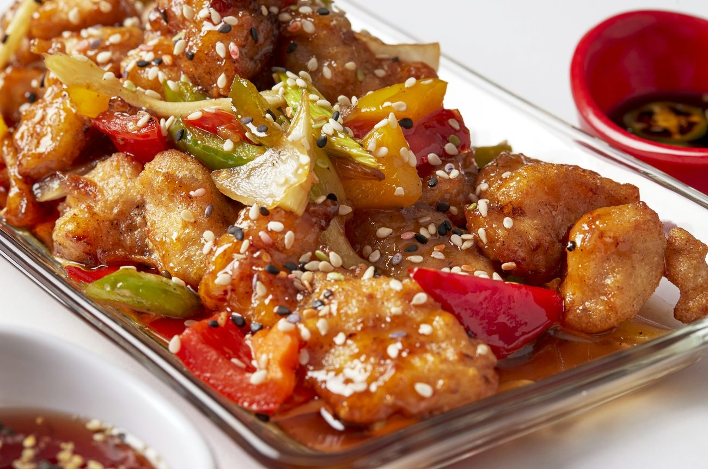
1. Coat: Dip the pork in beaten egg, then roll in the seasoned cornflour, pressing so it sticks. Rest 5 minutes so the coating hydrates – it fries up crisper.
2. Air fry: Spray well with oil and air fry at 200°C for 12–14 minutes, shaking halfway, until golden and cooked through. Oven: 220°C fan-forced, 18–20 minutes.
3. Stir-fry the veg: Heat the oil in a wok over high heat and stir-fry the onion and capsicum for 2–3 minutes. They should still have some crunch.
4. Sauce: Add the pineapple juice, tomato sauce, sugar, vinegar and soy and bring to the boil. Stir in the cornflour slurry and simmer 1 minute until glossy.
5. Toss & serve: Add the crispy pork, toss quickly to coat and scatter with sesame seeds.
Takeaway secret: The sauce should be sharp as well as sweet. Taste it before the pork goes in and add a splash more vinegar if it's flat.
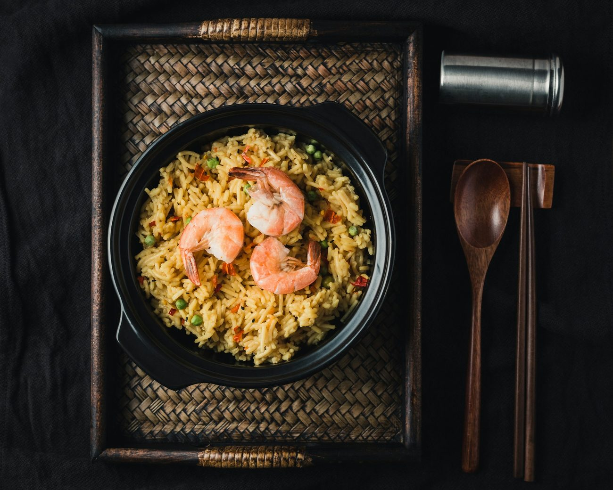
1. Use cold rice: Day-old rice is drier and firmer, so it fries instead of turning to mush. In a hurry, spread freshly cooked rice on a tray and refrigerate it uncovered for an hour.
2. Prawns: Heat half the oil in a wok or large pan until smoking. Cook the prawns for 1–2 minutes until just pink, then remove.
3. Eggs: Pour in the eggs and scramble softly for 30–40 seconds until just set. Remove.
4. Fry: Add the remaining oil, garlic and frozen veg and toss 1 minute. Add the rice, break up any clumps, then press it against the pan and toss for 3–4 minutes until hot and lightly toasted.
5. Finish: Pour the soy and oyster sauce around the edge of the wok so they sizzle. Return the eggs and prawns, add spring onion, sesame oil and white pepper, and toss to combine.
Takeaway secret: Pour the sauces around the hot edge of the wok, not over the rice. They caramelise as they hit the metal, which gives you that smoky takeaway 'wok hei' flavour.
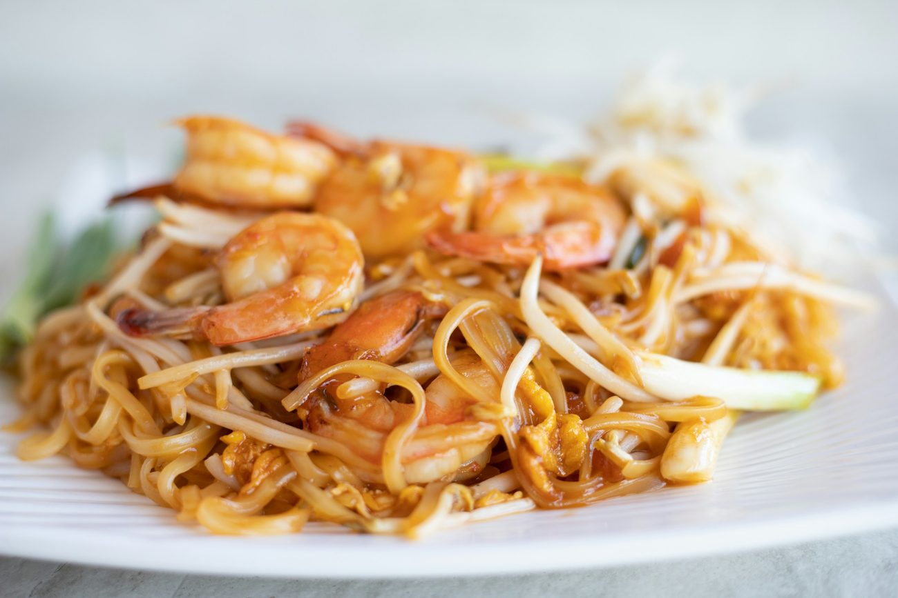
1. Soak, don't boil: Soak the noodles in warm (not boiling) water for 20–25 minutes until bendy but still firm in the centre. They finish cooking in the pan. Boiled noodles turn to mush. Drain.
2. Sauce: Stir the tamarind, fish sauce, sugar and sriracha until the sugar dissolves. Taste it: it should be sour, salty and sweet in equal measure.
3. Prawns: Heat the oil in a wok over high heat. Cook the prawns for 1–2 minutes until pink, then remove. Add the onion and garlic and stir-fry for 1 minute.
4. Egg & noodles: Push everything to one side, pour in the egg and scramble until just set. Add the noodles and sauce and toss for 2–3 minutes until the sauce is absorbed and the noodles are tender. Add a splash of water if they stick.
5. Finish: Return the prawns with the sprouts and spring onion and toss for 30 seconds. Top with peanuts, with lime wedges on the side.
Takeaway secret: Keep the noodles moving and the pan hot. If they start to clump, add a tablespoon of water rather than more oil.
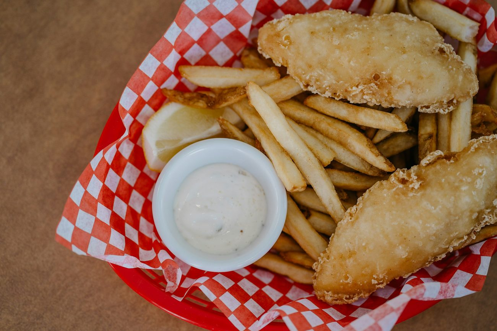
1. Start the chips: Soak the cut chips in cold water for 10 minutes, then dry very well. Toss with oil and salt. Air fry at 200°C for 20–22 minutes, shaking twice (oven: 220°C, 30–35 minutes).
2. Toast the crumbs: Stir the panko in a dry frying pan over medium heat for 2–3 minutes until light golden, then mix in the garlic powder. Pre-toasting means the crumb comes out golden, not pale.
3. Crumb: Pat the fish dry. Dust in the seasoned flour, dip in egg, then press into the toasted panko.
4. Cook: Spray both sides with oil. Air fry at 200°C for 8–10 minutes, until the fish flakes easily (oven: 220°C, 12–14 minutes). Cook it while the chips have 10 minutes left.
5. Tartare: Mix the yoghurt, mayo, gherkins, capers, lemon and herbs. Serve with the fish, chips and lemon wedges.
Takeaway secret: Dry the chips properly after soaking. Surface water steams them instead of crisping them.
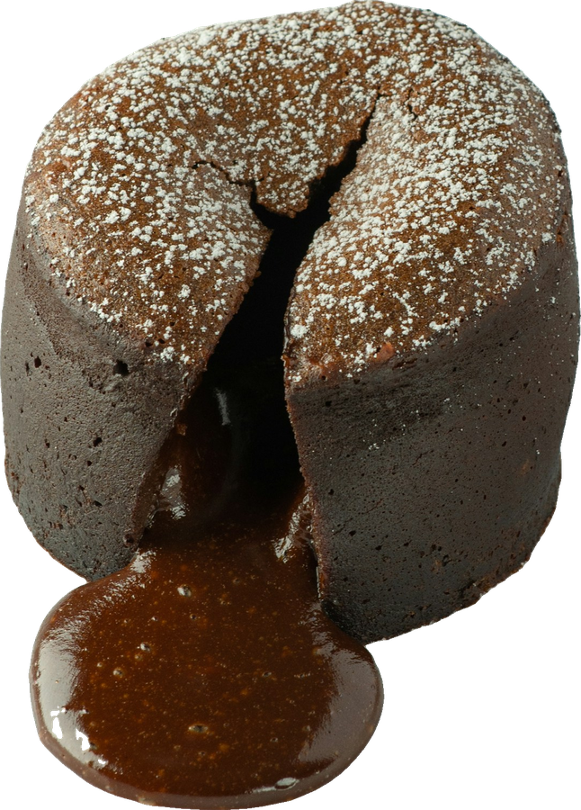
1. Prep: Heat the oven to 180°C fan-forced. Spray two 150 ml ramekins with oil and dust the inside with cocoa, tapping out the excess. This is what lets them turn out cleanly.
2. Batter: Whisk the eggs and sugar for 1 minute until frothy. Whisk in the yoghurt and the 10 g of melted chocolate, then sift in the protein, cocoa and flour and fold until just smooth.
3. Fill: Half-fill each ramekin, press a square of chocolate into the centre, then cover with the remaining batter.
4. Bake: Bake 10–12 minutes, until the edges are set and the centre still wobbles when you nudge the tray.
5. Turn out: Rest 1 minute, run a knife around the edge and invert onto a plate. Dust with icing sugar and serve immediately.
Takeaway secret: Take them out while the middle still wobbles. Whey protein sets fast and keeps firming as it rests, and a minute too long costs you the lava.
1. Freeze ahead: Spoon the yoghurt into an ice-cube tray and freeze for at least 4 hours. This is what makes it thick like a real shake instead of a protein drink.
2. Drip the jar: Drizzle the caramel topping around the inside rim of a chilled jar and let it run down the sides.
3. Blend: Blend the frozen yoghurt, milk, protein, ice, syrup and salt on high for 45–60 seconds until thick and smooth. Add a splash more milk only if the blender stalls.
4. Serve: Pour into the jar, top with whipped cream and a last thread of caramel. Serve with a wide straw and a spoon.
Takeaway secret: Add the liquid first and the frozen cubes last, then start the blender on low. It blends faster and needs less extra milk, so it stays thick.
The fitness industry is full of conflicting advice, fad diets, and people trying to sell you the next “secret.” Most of it is bullshit.
I’ve worked with enough people to know that the biggest problem isn’t motivation – it’s having meals that are actually realistic. You don’t need to survive on chicken and broccoli or spend hours cooking meals you’ll hate to perform well or get your dream physique.
That’s exactly why I created these recipe eBooks.
Every recipe is designed to be:
The recipe books will show you what to eat.
My coaching makes sure you actually do it.
If you’re sick of wasting time on random workouts and conflicting advice, let’s keep it simple.
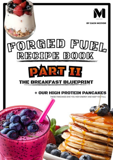
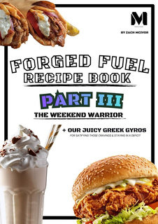
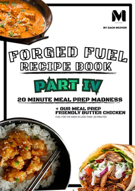
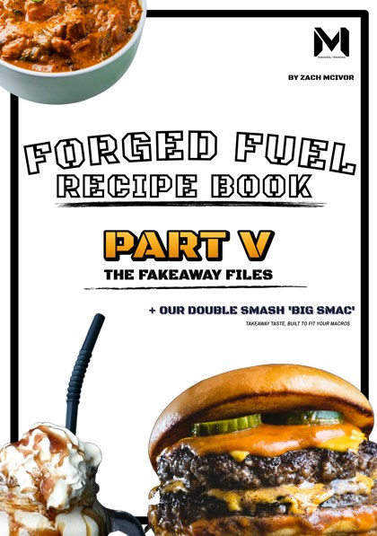